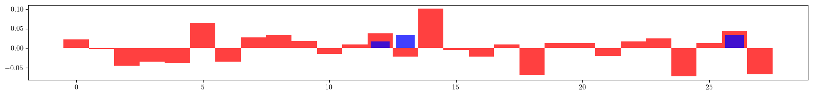

Example-36: Orbit (ORM optics correction)
[1]:
# In this example ORM base optics correction is explored
# Note, effects due to dispersion are not included
# Focusing error are added to quadrupoles and correcponding ORM is computed (observed ORM)
# The goal is to adjust quadrupole settings in the model to match observer ORM
# Once, parameters are fitted, they can be applied (possible with some weight) and ORM can be measured again
# In this example the derivative of ORM is computed with respect to quadrupole strength deviations
# Given a model response, procedure similar to the closed orbit correction can be performed
# Specific ORM blocks can be targeted in correction, e.g. coupling correction
# ML correction loop are also demonstraited including mini-batch version
# Response matrix can be also used with sparse solvers
[2]:
# Import
from pprint import pprint
import torch
from torch.utils.data import TensorDataset
from torch.utils.data import DataLoader
from sklearn.linear_model import Lasso
from sklearn.linear_model import OrthogonalMatchingPursuit
from sklearn.linear_model import Lars
from pathlib import Path
import matplotlib
from matplotlib import pyplot as plt
from matplotlib.patches import Rectangle
matplotlib.rcParams['text.usetex'] = True
from twiss import twiss
from twiss import propagate
from twiss import wolski_to_cs
from model.library.corrector import Corrector
from model.library.line import Line
from model.command.util import chop
from model.command.util import select
from model.command.external import load_sdds
from model.command.external import load_lattice
from model.command.build import build
from model.command.wrapper import group
from model.command.wrapper import forward
from model.command.wrapper import inverse
from model.command.wrapper import normalize
from model.command.wrapper import Wrapper
from model.command.orbit import orbit
from model.command.orbit import ORM
from model.command.orbit import ORM_IJ
from model.command.layout import Layout
[3]:
# Load ELEGANT twiss
path = Path('ic.twiss')
parameters, columns = load_sdds(path)
nu_qx:float = parameters['nux'] % 1
nu_qy:float = parameters['nuy'] % 1
# Set twiss parameters at BPMs
kinds = select(columns, 'ElementType', keep=False)
a_qx = select(columns, 'alphax', keep=False)
b_qx = select(columns, 'betax' , keep=False)
a_qy = select(columns, 'alphay', keep=False)
b_qy = select(columns, 'betay' , keep=False)
a_qx = {key: value for (key, value), kind in zip(a_qx.items(), kinds.values()) if kind == 'MONI'}
b_qx = {key: value for (key, value), kind in zip(b_qx.items(), kinds.values()) if kind == 'MONI'}
a_qy = {key: value for (key, value), kind in zip(a_qy.items(), kinds.values()) if kind == 'MONI'}
b_qy = {key: value for (key, value), kind in zip(b_qy.items(), kinds.values()) if kind == 'MONI'}
positions = select(columns, 's', keep=False).items()
positions = [value for (key, value), kind in zip(positions, kinds.values()) if kind == 'MONI']
[4]:
# Build and setup lattice
# Quadrupoles are splitted into 2**2 parts, Dipoles -- 2**4 part
# Correctors are inserted between parts
path = Path('ic.lte')
data = load_lattice(path)
ring:Line = build('RING', 'ELEGANT', data)
ring.flatten()
ring.merge()
ring.split((None, ['BPM'], None, None))
ring.roll(1)
n_q = 2**2
n_d = 2**4
for name in [name for name, kind, *_ in ring.layout() if kind == 'Quadrupole']:
corrector = Corrector(f'{name}_CXY', factor=1/(n_q - 1))
ring.split((n_q, None, [name], None), paste=[corrector])
for name in [name for name, kind, *_ in ring.layout() if kind == 'Dipole']:
corrector = Corrector(f'{name}_CXY', factor=1/(n_d - 1))
ring.split((n_d, None, [name], None), paste=[corrector])
for element in ring:
if element.__class__.__name__ == 'Dipole':
element.linear = True
ring.splice()
[5]:
# Compare linear tunes
state = torch.tensor(4*[0.0], dtype=torch.float64)
matrix = torch.func.jacrev(ring)(state)
(nuqx, nuqy), _, w = twiss(matrix)
print(nu_qx - nuqx)
print(nu_qy - nuqy)
# Compute twiss parameters at bpms
ring.propagate = False
ring.matrix = True
state = torch.tensor(4*[0.0], dtype=torch.float64)
ring(state)
# Propagate twiss parametes
ws = [w]
*ms, _ = ring.container_matrix
for m in ms:
w = propagate(w, m)
ws.append(w)
ws = torch.stack(ws)
# Remove matrix flag
ring.matrix = False
# Convert to CS and plot beta functions
ax, bx, ay, by = torch.vmap(wolski_to_cs)(ws).T
layout = Layout(ring)
_, _, lengths, *_ = layout.slicing_table()
rectangles = layout.profile_1d(scale=0.75, shift=0.0, text=False, exclude=['BPM', 'Corrector'])
plt.figure(figsize=(16, 2))
plt.plot(positions, b_qx.values(), color='red', alpha=0.75, marker='o', label=r'$\beta_x$')
plt.errorbar(ring.locations().cpu().numpy(), bx.cpu().numpy(), fmt=' ', ms=8, color='black', alpha=0.75, marker='x')
plt.plot(positions, b_qy.values(), color='blue', alpha=0.75, marker='o', label=r'$\beta_y$')
plt.errorbar(ring.locations().cpu().numpy(), by.cpu().numpy(), fmt=' ', ms=8, color='black', alpha=0.75, marker='x')
plt.xticks(ticks=positions, labels=b_qx.keys())
plt.legend()
for rectangle in rectangles:
plt.gca().add_patch(Rectangle(**rectangle))
plt.ylim(-1.0, 5.0)
plt.tight_layout()
plt.show()
tensor(1.4433e-15, dtype=torch.float64)
tensor(-9.9920e-16, dtype=torch.float64)
[6]:
# Compute closed orbit
fp = 1.0E-3*torch.randn(4, dtype=torch.float64)
fp, *_ = orbit(ring, fp, [], alignment=False, limit=8, epsilon=1.0E-12)
# Chop small values
fp = [fp]
chop(fp)
fp, *_ = fp
print(fp)
tensor([0., 0., 0., 0.], dtype=torch.float64)
[7]:
# Compute ORM (without errors)
orm = ORM(ring, fp, [], limit=1, start=0, epsilon=None)
print(orm.shape)
data = orm.clone()
data[data==0.0] = torch.nan
plt.figure(figsize=(34/4, 72/4))
img = plt.imshow(data.cpu().numpy(), cmap='magma', interpolation='nearest')
cax = plt.gcf().add_axes([plt.gca().get_position().x1 + 0.01, plt.gca().get_position().y0, 0.02, plt.gca().get_position().height])
plt.colorbar(img, cax=cax)
plt.show()
torch.Size([32, 72])
[8]:
# Set lattice with focusing errors
error:Line = ring.clone()
nq = error.describe['Quadrupole']
error_kn = 0.05*torch.randn(nq, dtype=torch.float64)
error_ks = 0.05*torch.randn(nq, dtype=torch.float64)
index = 0
label = ''
for line in error.sequence:
for element in line:
if element.__class__.__name__ == 'Quadrupole':
if label != element.name:
index +=1
label = element.name
element.kn = (element.kn + error_kn[index - 1]).item()
element.ks = (element.ks + error_ks[index - 1]).item()
[9]:
# Setup twiss computation
def task(line):
line:Line = line.clone()
state = torch.tensor(4*[0.0], dtype=torch.float64)
matrix = torch.func.jacrev(line)(state)
(nux, nuy), _, w = twiss(matrix)
line.propagate = False
line.matrix = True
state = torch.tensor(4*[0.0], dtype=torch.float64)
line(state)
ws = [w]
*ms, _ = line.container_matrix
for m in ms:
w = propagate(w, m)
ws.append(w)
ws = torch.stack(ws)
ax, bx, ay, by = torch.vmap(wolski_to_cs)(ws).T
return (nux, nuy), (ax, bx, ay, by)
# Unperturbed twiss
(nux_model, nuy_model), (ax_model, bx_model, ay_model, by_model) = task(ring)
# Perturbed twiss
(nux_error, nuy_error), (ax_error, bx_error, ay_error, by_error) = task(error)
# Compare twiss
print((nux_model - nux_error).norm())
print((nuy_model - nuy_error).norm())
print()
print((ax_model - ax_error).norm())
print((bx_model - bx_error).norm())
print((ay_model - ay_error).norm())
print((by_model - by_error).norm())
print()
# Plot beta beating
plt.figure(figsize=(16, 2))
plt.plot(ring.locations().cpu().numpy(), 100*((bx_model - bx_error)/bx_model).cpu().numpy(), color='red', alpha=0.75, marker='o')
plt.plot(ring.locations().cpu().numpy(), 100*((by_model - by_error)/by_model).cpu().numpy(), color='blue', alpha=0.75, marker='o')
plt.xticks(ticks=positions, labels=['BPM05', 'BPM07', 'BPM08', 'BPM09', 'BPM10', 'BPM11', 'BPM12', 'BPM13', 'BPM14', 'BPM15', 'BPM16', 'BPM17', 'BPM01', 'BPM02', 'BPM03', 'BPM04'])
plt.tight_layout()
plt.show()
tensor(0.0045, dtype=torch.float64)
tensor(0.0089, dtype=torch.float64)
tensor(0.7893, dtype=torch.float64)
tensor(0.4524, dtype=torch.float64)
tensor(0.2795, dtype=torch.float64)
tensor(0.1634, dtype=torch.float64)

[10]:
# Compute (measure) ORM for lattice with errors
orm_error = ORM(error, fp, [], limit=1, start=0, epsilon=None)
print(orm_error.shape)
data = orm_error.clone()
data[data==0.0] = torch.nan
plt.figure(figsize=(34/4, 72/4))
img = plt.imshow(data.cpu().numpy(), cmap='magma', interpolation='nearest')
cax = plt.gcf().add_axes([plt.gca().get_position().x1 + 0.01, plt.gca().get_position().y0, 0.02, plt.gca().get_position().height])
plt.colorbar(img, cax=cax)
plt.show()
torch.Size([32, 72])
[11]:
# Plot difference of model and observer ORMs
data = (orm - orm_error).clone()
data[data==0.0] = torch.nan
plt.figure(figsize=(34/4, 72/4))
img = plt.imshow(data.cpu().numpy(), cmap='magma', interpolation='nearest')
cax = plt.gcf().add_axes([plt.gca().get_position().x1 + 0.01, plt.gca().get_position().y0, 0.02, plt.gca().get_position().height])
plt.colorbar(img, cax=cax)
plt.show()

[12]:
# Define parametric ORM
def ORM_knks(knks):
kn, ks = knks.reshape(1 + 1, -1)
return ORM(ring, fp, [kn, ks], ('kn', ['Quadrupole'], None, None), ('ks', ['Quadrupole'], None, None), limit=1, start=0, epsilon=None)
# Test correction with exact error values
print(torch.allclose(orm_error, ORM_knks(torch.cat([error_kn, error_ks]))))
True
[13]:
# Parametric ORM is differentiable with respect to deviation groups
# Set deviation tensors
kn = torch.zeros_like(error_kn)
ks = torch.zeros_like(error_ks)
knks = torch.cat([kn, ks])
# Compute derivative of model ORM with respect to kn and ks deviations
response = torch.func.jacrev(ORM_knks)(knks)
print(orm.shape)
print(response.shape)
torch.Size([32, 72])
torch.Size([32, 72, 56])
[14]:
# Test ORM response
error_knks = torch.cat([error_kn, error_ks])
matrix = response.reshape(-1, *knks.shape)
print((orm_error - (orm + (matrix @ (0*error_knks)).reshape_as(orm))).norm())
print((orm_error - (orm + (matrix @ (1*error_knks)).reshape_as(orm))).norm())
tensor(3.1476, dtype=torch.float64)
tensor(0.1936, dtype=torch.float64)
[15]:
# Perform correction (model to experiment)
lr = 0.5
kn = torch.zeros_like(error_kn)
ks = torch.zeros_like(error_ks)
for _ in range(16):
orm_fit = ORM_knks(torch.cat([kn, ks]))
dkn, dks = - lr*torch.linalg.lstsq(matrix, (orm_fit - orm_error).flatten(), driver='gelsd').solution.reshape(1 + 1, -1)
kn += dkn
ks += dks
print((orm_fit - orm_error).norm())
# Plot final quadrupole settings
plt.figure(figsize=(16, 2))
plt.bar(range(len(error_kn)), error_kn.cpu().numpy(), color='red', alpha=0.75, width=1)
plt.bar(range(len(kn)), +kn.cpu().numpy(), color='blue', alpha=0.75, width=0.75)
plt.tight_layout()
plt.show()
plt.figure(figsize=(16, 2))
plt.bar(range(len(error_ks)), error_ks.cpu().numpy(), color='red', alpha=0.75, width=1)
plt.bar(range(len(ks)), +ks.cpu().numpy(), color='blue', alpha=0.75, width=0.75)
plt.tight_layout()
plt.show()
tensor(3.1476, dtype=torch.float64)
tensor(1.5975, dtype=torch.float64)
tensor(0.8304, dtype=torch.float64)
tensor(0.4394, dtype=torch.float64)
tensor(0.2358, dtype=torch.float64)
tensor(0.1279, dtype=torch.float64)
tensor(0.0700, dtype=torch.float64)
tensor(0.0385, dtype=torch.float64)
tensor(0.0213, dtype=torch.float64)
tensor(0.0118, dtype=torch.float64)
tensor(0.0066, dtype=torch.float64)
tensor(0.0037, dtype=torch.float64)
tensor(0.0020, dtype=torch.float64)
tensor(0.0011, dtype=torch.float64)
tensor(0.0006, dtype=torch.float64)
tensor(0.0004, dtype=torch.float64)

[16]:
# Apply corrections
lattice:Line = error.clone()
index = 0
label = ''
for line in lattice.sequence:
for element in line:
if element.__class__.__name__ == 'Quadrupole':
if label != element.name:
index +=1
label = element.name
element.kn = (element.kn - kn[index - 1]).item()
element.ks = (element.ks - ks[index - 1]).item()
[17]:
# Compare ORM with model before and after correction
orm_lattice = ORM(lattice, fp, [], limit=1, start=0, epsilon=None)
data = (orm - orm_error).clone()
data[data==0.0] = torch.nan
plt.figure(figsize=(34/4, 72/4))
img = plt.imshow(data.cpu().numpy(), cmap='magma', interpolation='nearest')
cax = plt.gcf().add_axes([plt.gca().get_position().x1 + 0.01, plt.gca().get_position().y0, 0.02, plt.gca().get_position().height])
plt.colorbar(img, cax=cax)
plt.show()
data = (orm - orm_lattice).clone()
data[data==0.0] = torch.nan
plt.figure(figsize=(34/4, 72/4))
img = plt.imshow(data.cpu().numpy(), cmap='magma', interpolation='nearest')
cax = plt.gcf().add_axes([plt.gca().get_position().x1 + 0.01, plt.gca().get_position().y0, 0.02, plt.gca().get_position().height])
plt.colorbar(img, cax=cax)
plt.show()

[18]:
# Compare twiss parameters with model before and after correction
(nux_model, nuy_model), (ax_model, bx_model, ay_model, by_model) = task(ring)
(nux_error, nuy_error), (ax_error, bx_error, ay_error, by_error) = task(error)
(nux_lattice, nuy_lattice), (ax_lattice, bx_lattice, ay_lattice, by_lattice) = task(lattice)
# Before
plt.figure(figsize=(16, 2))
plt.plot(ring.locations().cpu().numpy(), 100*((bx_model - bx_error)/bx_model).cpu().numpy(), color='red', alpha=0.75, marker='o')
plt.plot(ring.locations().cpu().numpy(), 100*((by_model - by_error)/by_model).cpu().numpy(), color='blue', alpha=0.75, marker='o')
plt.xticks(ticks=positions, labels=['BPM05', 'BPM07', 'BPM08', 'BPM09', 'BPM10', 'BPM11', 'BPM12', 'BPM13', 'BPM14', 'BPM15', 'BPM16', 'BPM17', 'BPM01', 'BPM02', 'BPM03', 'BPM04'])
plt.tight_layout()
plt.show()
# After
plt.figure(figsize=(16, 2))
plt.plot(ring.locations().cpu().numpy(), 100*((bx_model - bx_lattice)/bx_model).cpu().numpy(), color='red', alpha=0.75, marker='o')
plt.plot(ring.locations().cpu().numpy(), 100*((by_model - by_lattice)/by_model).cpu().numpy(), color='blue', alpha=0.75, marker='o')
plt.xticks(ticks=positions, labels=['BPM05', 'BPM07', 'BPM08', 'BPM09', 'BPM10', 'BPM11', 'BPM12', 'BPM13', 'BPM14', 'BPM15', 'BPM16', 'BPM17', 'BPM01', 'BPM02', 'BPM03', 'BPM04'])
plt.tight_layout()
plt.show()

[19]:
# ORM function computes all blocks of the orbit response matrix [[Rxx, Rxy], [Ryx, Ryy]]
# It might be usefull to compute block separately
# This can be done directly with orbit function as follows
def Rxx(knks):
kn, ks = knks.reshape(1 + 1, -1)
count = ring.describe['Corrector']
cx = torch.tensor(count*[0.0], dtype=line.dtype, device=line.device)
def task(cx):
points, _ = orbit(ring, fp, [cx, kn, ks], ('cx', ['Corrector'], None, None), ('kn', ['Quadrupole'], None, None), ('ks', ['Quadrupole'], None, None), advance=True, full=False, alignment=False, limit=1, epsilon=None)
qx, _, qy, _ = points.T
return qx
return torch.func.jacrev(task)(cx)
def Rxy(knks):
kn, ks = knks.reshape(1 + 1, -1)
count = ring.describe['Corrector']
cy = torch.tensor(count*[0.0], dtype=line.dtype, device=line.device)
def task(cy):
points, _ = orbit(ring, fp, [cy, kn, ks], ('cy', ['Corrector'], None, None), ('kn', ['Quadrupole'], None, None), ('ks', ['Quadrupole'], None, None), advance=True, full=False, alignment=False, limit=1, epsilon=None)
qx, _, qy, _ = points.T
return qx
return torch.func.jacrev(task)(cy)
def Ryx(knks):
kn, ks = knks.reshape(1 + 1, -1)
count = ring.describe['Corrector']
cx = torch.tensor(count*[0.0], dtype=line.dtype, device=line.device)
def task(cy):
points, _ = orbit(ring, fp, [cx, kn, ks], ('cx', ['Corrector'], None, None), ('kn', ['Quadrupole'], None, None), ('ks', ['Quadrupole'], None, None), advance=True, full=False, alignment=False, limit=1, epsilon=None)
qx, _, qy, _ = points.T
return qy
return torch.func.jacrev(task)(cx)
def Ryy(knks):
kn, ks = knks.reshape(1 + 1, -1)
count = ring.describe['Corrector']
cy = torch.tensor(count*[0.0], dtype=line.dtype, device=line.device)
def task(cy):
points, _ = orbit(ring, fp, [cy, kn, ks], ('cy', ['Corrector'], None, None), ('kn', ['Quadrupole'], None, None), ('ks', ['Quadrupole'], None, None), advance=True, full=False, alignment=False, limit=1, epsilon=None)
qx, _, qy, _ = points.T
return qy
return torch.func.jacrev(task)(cy)
[20]:
# Compute blocks
kn = torch.zeros_like(error_kn)
ks = torch.zeros_like(error_ks)
knks = torch.cat([kn, ks])
rxx = Rxx(knks)
rxy = Rxy(knks)
ryx = Ryx(knks)
ryy = Ryy(knks)
torch.allclose(orm, torch.vstack([torch.hstack([rxx, rxy]), torch.hstack([rxy, ryy])]))
[20]:
True
[21]:
# Blocks can be used for more targeted correction
# For example, coupling correction can be performed using only rxy and ryx blocks
def objective(kn, ks):
knks = torch.cat([kn, ks])
rxy = Rxy(knks)
ryx = Ryx(knks)
return torch.stack([rxy, ryx]).flatten()
kn = torch.zeros_like(error_kn)
ks = torch.zeros_like(error_ks)
matrix = torch.func.jacrev(objective, 1)(kn, ks)
vector_error = objective(error_kn, error_ks)
lr = 0.5
for _ in range(8):
vector_fit = objective(kn, ks)
dks = - lr*torch.linalg.lstsq(matrix, (vector_fit - vector_error), driver='gelsd').solution
ks += dks
print((vector_fit - vector_error).norm())
# Plot fitted parameters
plt.figure(figsize=(16, 2))
plt.bar(range(len(error_ks)), error_ks.cpu().numpy(), color='red', alpha=0.75, width=1)
plt.bar(range(len(ks)), +ks.cpu().numpy(), color='blue', alpha=0.75, width=0.75)
plt.tight_layout()
plt.show()
tensor(1.0791, dtype=torch.float64)
tensor(0.5400, dtype=torch.float64)
tensor(0.2708, dtype=torch.float64)
tensor(0.1374, dtype=torch.float64)
tensor(0.0729, dtype=torch.float64)
tensor(0.0439, dtype=torch.float64)
tensor(0.0330, dtype=torch.float64)
tensor(0.0296, dtype=torch.float64)

[22]:
# Use rxx and ryy blocks to fit kn values
def objective(kn, ks):
knks = torch.cat([kn, ks])
rxx = Rxx(knks)
ryy = Ryy(knks)
return torch.stack([rxx, ryy]).flatten()
matrix = torch.func.jacrev(objective, 0)(kn, ks)
vector_error = objective(error_kn, error_ks)
lr = 0.5
for _ in range(8):
vector_fit = objective(kn, ks)
dkn = - lr*torch.linalg.lstsq(matrix, (vector_fit - vector_error), driver='gelsd').solution
kn += dkn
print((vector_fit - vector_error).norm())
# Plot fitted parameters
plt.figure(figsize=(16, 2))
plt.bar(range(len(error_kn)), error_kn.cpu().numpy(), color='red', alpha=0.75, width=1)
plt.bar(range(len(kn)), +kn.cpu().numpy(), color='blue', alpha=0.75, width=0.75)
plt.tight_layout()
plt.show()
tensor(2.7973, dtype=torch.float64)
tensor(1.4148, dtype=torch.float64)
tensor(0.7288, dtype=torch.float64)
tensor(0.3806, dtype=torch.float64)
tensor(0.2011, dtype=torch.float64)
tensor(0.1074, dtype=torch.float64)
tensor(0.0578, dtype=torch.float64)
tensor(0.0314, dtype=torch.float64)
[23]:
# ML style correction (full ORM)
# Set parametric ORM
def ORM_knks(kn, ks):
return ORM(ring, fp, [kn, ks], ('kn', ['Quadrupole'], None, None), ('ks', ['Quadrupole'], None, None), limit=1, start=0, epsilon=None)
# Setup objective function
def objective(kn, ks):
orm = ORM_knks(kn, ks)
return (orm - orm_error).norm()
# Set initial values
kn = torch.zeros_like(error_kn)
ks = torch.zeros_like(error_ks)
# Test objective function
print(objective(error_kn, error_ks))
# Setup normalized objective
objective = normalize(objective, [(-0.5, 0.5), (-0.5, 0.5)])
# Test normalized objective
print(objective(*forward([error_kn, error_ks], [(-0.5, 0.5), (-0.5, 0.5)])))
# Normalize initial corrector settings
kn, ks, *_ = forward([kn, ks], [(-0.5, 0.5), (-0.5, 0.5)])
# Set model (forward returns evaluated objective)
model = Wrapper(objective, kn, ks)
# Set optimizer
optimizer = torch.optim.AdamW(model.parameters(), lr=0.01)
# Perform optimization
for epoch in range(64):
value = model()
value.backward()
optimizer.step()
optimizer.zero_grad()
print(value.detach())
tensor(0., dtype=torch.float64)
tensor(2.6115e-13, dtype=torch.float64)
tensor(3.1476, dtype=torch.float64)
tensor(2.4511, dtype=torch.float64)
tensor(2.1673, dtype=torch.float64)
tensor(1.6036, dtype=torch.float64)
tensor(1.2814, dtype=torch.float64)
tensor(1.3156, dtype=torch.float64)
tensor(1.2044, dtype=torch.float64)
tensor(1.1573, dtype=torch.float64)
tensor(1.2635, dtype=torch.float64)
tensor(1.2003, dtype=torch.float64)
tensor(0.9719, dtype=torch.float64)
tensor(0.8235, dtype=torch.float64)
tensor(0.7653, dtype=torch.float64)
tensor(0.5897, dtype=torch.float64)
tensor(0.5532, dtype=torch.float64)
tensor(0.6488, dtype=torch.float64)
tensor(0.6361, dtype=torch.float64)
tensor(0.6368, dtype=torch.float64)
tensor(0.5782, dtype=torch.float64)
tensor(0.4452, dtype=torch.float64)
tensor(0.4537, dtype=torch.float64)
tensor(0.4271, dtype=torch.float64)
tensor(0.4672, dtype=torch.float64)
tensor(0.4747, dtype=torch.float64)
tensor(0.4334, dtype=torch.float64)
tensor(0.3978, dtype=torch.float64)
tensor(0.2903, dtype=torch.float64)
tensor(0.3264, dtype=torch.float64)
tensor(0.3193, dtype=torch.float64)
tensor(0.3527, dtype=torch.float64)
tensor(0.2962, dtype=torch.float64)
tensor(0.2854, dtype=torch.float64)
tensor(0.2589, dtype=torch.float64)
tensor(0.3143, dtype=torch.float64)
tensor(0.2854, dtype=torch.float64)
tensor(0.2890, dtype=torch.float64)
tensor(0.2751, dtype=torch.float64)
tensor(0.2480, dtype=torch.float64)
tensor(0.2566, dtype=torch.float64)
tensor(0.2515, dtype=torch.float64)
tensor(0.2427, dtype=torch.float64)
tensor(0.2202, dtype=torch.float64)
tensor(0.2097, dtype=torch.float64)
tensor(0.2235, dtype=torch.float64)
tensor(0.2249, dtype=torch.float64)
tensor(0.1987, dtype=torch.float64)
tensor(0.1980, dtype=torch.float64)
tensor(0.2068, dtype=torch.float64)
tensor(0.1977, dtype=torch.float64)
tensor(0.1842, dtype=torch.float64)
tensor(0.1782, dtype=torch.float64)
tensor(0.1792, dtype=torch.float64)
tensor(0.1709, dtype=torch.float64)
tensor(0.1703, dtype=torch.float64)
tensor(0.1781, dtype=torch.float64)
tensor(0.1855, dtype=torch.float64)
tensor(0.1845, dtype=torch.float64)
tensor(0.1834, dtype=torch.float64)
tensor(0.1941, dtype=torch.float64)
tensor(0.1998, dtype=torch.float64)
tensor(0.1804, dtype=torch.float64)
tensor(0.1682, dtype=torch.float64)
tensor(0.1681, dtype=torch.float64)
tensor(0.1829, dtype=torch.float64)
[24]:
# Apply corrections
kn, ks = inverse([kn, ks], [(-0.5, 0.5), (-0.5, 0.5)])
lattice:Line = error.clone()
index = 0
label = ''
for line in lattice.sequence:
for element in line:
if element.__class__.__name__ == 'Quadrupole':
if label != element.name:
index +=1
label = element.name
element.kn = (element.kn - kn[index - 1]).item()
element.ks = (element.ks - ks[index - 1]).item()
[25]:
# Compare ORM with model before and after correction
orm_lattice = ORM(lattice, fp, [], limit=1, start=0, epsilon=None)
data = (orm - orm_error).clone()
data[data==0.0] = torch.nan
plt.figure(figsize=(34/4, 72/4))
img = plt.imshow(data.cpu().numpy(), cmap='magma', interpolation='nearest')
cax = plt.gcf().add_axes([plt.gca().get_position().x1 + 0.01, plt.gca().get_position().y0, 0.02, plt.gca().get_position().height])
plt.colorbar(img, cax=cax)
plt.show()
data = (orm - orm_lattice).clone()
data[data==0.0] = torch.nan
plt.figure(figsize=(34/4, 72/4))
img = plt.imshow(data.cpu().numpy(), cmap='magma', interpolation='nearest')
cax = plt.gcf().add_axes([plt.gca().get_position().x1 + 0.01, plt.gca().get_position().y0, 0.02, plt.gca().get_position().height])
plt.colorbar(img, cax=cax)
plt.show()

[26]:
# Compare twiss parameters with model before and after correction
(nux_model, nuy_model), (ax_model, bx_model, ay_model, by_model) = task(ring)
(nux_error, nuy_error), (ax_error, bx_error, ay_error, by_error) = task(error)
(nux_lattice, nuy_lattice), (ax_lattice, bx_lattice, ay_lattice, by_lattice) = task(lattice)
# Before
plt.figure(figsize=(16, 2))
plt.plot(ring.locations().cpu().numpy(), 100*((bx_model - bx_error)/bx_model).cpu().numpy(), color='red', alpha=0.75, marker='o')
plt.plot(ring.locations().cpu().numpy(), 100*((by_model - by_error)/by_model).cpu().numpy(), color='blue', alpha=0.75, marker='o')
plt.xticks(ticks=positions, labels=['BPM05', 'BPM07', 'BPM08', 'BPM09', 'BPM10', 'BPM11', 'BPM12', 'BPM13', 'BPM14', 'BPM15', 'BPM16', 'BPM17', 'BPM01', 'BPM02', 'BPM03', 'BPM04'])
plt.tight_layout()
plt.show()
# After
plt.figure(figsize=(16, 2))
plt.plot(ring.locations().cpu().numpy(), 100*((bx_model - bx_lattice)/bx_model).cpu().numpy(), color='red', alpha=0.75, marker='o')
plt.plot(ring.locations().cpu().numpy(), 100*((by_model - by_lattice)/by_model).cpu().numpy(), color='blue', alpha=0.75, marker='o')
plt.xticks(ticks=positions, labels=['BPM05', 'BPM07', 'BPM08', 'BPM09', 'BPM10', 'BPM11', 'BPM12', 'BPM13', 'BPM14', 'BPM15', 'BPM16', 'BPM17', 'BPM01', 'BPM02', 'BPM03', 'BPM04'])
plt.tight_layout()
plt.show()

[27]:
# ORM_IJ function can be used to compute derivatives of closed orbit at specified BPM (I) from specified corrector (J)
# In this case the lattice shoud be flat
# Is and Js should match BPM and Corrector locations (this if fact a requirement for correctors)
# Set flat line
line = error.clone()
line.flatten()
# Set locations
# Note, index method returns a tensor, but ints are expected by ORM_IJ
_, Is = line.index('BPM')
_, Js = line.index('Corrector')
# Compute ORM_IJ
nb = line.describe['BPM']
nc = line.describe['Corrector']
index_i = 5
index_j = 10
I = Is[index_i]
J = Js[index_j]
print(ORM_IJ(line, fp, I.item(), J.item(), [], limit=1, epsilon=None))
print()
print(orm_error[index_i, index_j]) # d(qx)/d(cx)
print(orm_error[index_i, index_j + nc]) # d(qx)/d(cy)
print(orm_error[index_i + nb, index_j]) # d(qy)/d(cx)
print(orm_error[index_i + nb, index_j + nc]) # d(qy)/d(cy)
tensor([[ 0.4677, 0.0016],
[-0.0080, 0.3623]], dtype=torch.float64)
tensor(0.4677, dtype=torch.float64)
tensor(0.0016, dtype=torch.float64)
tensor(-0.0080, dtype=torch.float64)
tensor(0.3623, dtype=torch.float64)
[28]:
# ML style correction (batched)
# Set parametric ORM
line = ring.clone()
line.flatten()
nb = line.describe['BPM']
nc = line.describe['Corrector']
_, Is = line.index('BPM')
_, Js = line.index('Corrector')
# Set batched funtion
# This function is to slow to be of practical interest
# As it is the case for orbit correction, evaluation of full ORM and selecting specific elements is now faster
# Here, only several interations are performed for demonstration
def ORM_knks(IJs, kn, ks):
result = []
for IJ in IJs:
result.append(ORM_IJ(line, fp, *IJ.tolist(), [kn, ks], ('kn', ['Quadrupole'], None, None), ('ks', ['Quadrupole'], None, None), limit=1, epsilon=None))
return torch.stack(result)
kn = torch.zeros_like(error_kn)
ks = torch.zeros_like(error_ks)
# Normalize objective
ORM_knks = normalize(ORM_knks, [(None, None), (-0.5, 0.5), (-0.5, 0.5)])
# Normalize initial corrector settings
kn, ks, *_ = forward([kn, ks], [(-0.5, 0.5), (-0.5, 0.5)])
# Set model
model = Wrapper(ORM_knks, kn, ks)
# Set optimizer
optimizer = torch.optim.AdamW(model.parameters(), lr=0.005)
# Set features and labels
X = []
y = []
for i in range(nb):
for j in range(nc):
X.append(torch.stack([Is[i], Js[j]]))
y.append(torch.stack([orm_error[i, j], orm_error[i, j + nc], orm_error[i + nb, j], orm_error[i + nb, j + nc]]).reshape(2, 2))
X = torch.stack(X)
y = torch.stack(y)
# Set dataset
batch_size = 16
dataset = TensorDataset(X.clone(), y.clone())
dataloader = DataLoader(dataset, batch_size=batch_size, shuffle=True)
# Set loss funtion
lf = torch.nn.MSELoss()
# Perfom optimization
for epoch in range(1):
for batch, (X, y) in enumerate(dataloader):
y_hat = model(X)
value = lf(y_hat, y)
value.backward()
optimizer.step()
optimizer.zero_grad()
with torch.no_grad():
print(epoch, batch, len(dataloader) - 1, value.detach())
0 0 35 tensor(0.0038, dtype=torch.float64)
0 1 35 tensor(0.0035, dtype=torch.float64)
0 2 35 tensor(0.0020, dtype=torch.float64)
0 3 35 tensor(0.0017, dtype=torch.float64)
0 4 35 tensor(0.0009, dtype=torch.float64)
0 5 35 tensor(0.0008, dtype=torch.float64)
0 6 35 tensor(0.0008, dtype=torch.float64)
0 7 35 tensor(0.0010, dtype=torch.float64)
0 8 35 tensor(0.0015, dtype=torch.float64)
0 9 35 tensor(0.0006, dtype=torch.float64)
0 10 35 tensor(0.0007, dtype=torch.float64)
0 11 35 tensor(0.0009, dtype=torch.float64)
0 12 35 tensor(0.0009, dtype=torch.float64)
0 13 35 tensor(0.0007, dtype=torch.float64)
0 14 35 tensor(0.0007, dtype=torch.float64)
0 15 35 tensor(0.0007, dtype=torch.float64)
0 16 35 tensor(0.0006, dtype=torch.float64)
0 17 35 tensor(0.0003, dtype=torch.float64)
0 18 35 tensor(0.0006, dtype=torch.float64)
0 19 35 tensor(0.0004, dtype=torch.float64)
0 20 35 tensor(0.0005, dtype=torch.float64)
0 21 35 tensor(0.0004, dtype=torch.float64)
0 22 35 tensor(0.0002, dtype=torch.float64)
0 23 35 tensor(0.0003, dtype=torch.float64)
0 24 35 tensor(0.0003, dtype=torch.float64)
0 25 35 tensor(0.0003, dtype=torch.float64)
0 26 35 tensor(0.0002, dtype=torch.float64)
0 27 35 tensor(0.0001, dtype=torch.float64)
0 28 35 tensor(0.0003, dtype=torch.float64)
0 29 35 tensor(0.0003, dtype=torch.float64)
0 30 35 tensor(0.0001, dtype=torch.float64)
0 31 35 tensor(0.0003, dtype=torch.float64)
0 32 35 tensor(0.0002, dtype=torch.float64)
0 33 35 tensor(0.0001, dtype=torch.float64)
0 34 35 tensor(0.0001, dtype=torch.float64)
0 35 35 tensor(0.0002, dtype=torch.float64)
[29]:
# Apply corrections
kn, ks = inverse([kn, ks], [(-0.5, 0.5), (-0.5, 0.5)])
lattice:Line = error.clone()
index = 0
label = ''
for line in lattice.sequence:
for element in line:
if element.__class__.__name__ == 'Quadrupole':
if label != element.name:
index +=1
label = element.name
element.kn = (element.kn - kn[index - 1]).item()
element.ks = (element.ks - ks[index - 1]).item()
[30]:
# Compare ORM with model before and after correction
orm_lattice = ORM(lattice, fp, [], limit=1, start=0, epsilon=None)
data = (orm - orm_error).clone()
data[data==0.0] = torch.nan
plt.figure(figsize=(34/4, 72/4))
img = plt.imshow(data.cpu().numpy(), cmap='magma', interpolation='nearest')
cax = plt.gcf().add_axes([plt.gca().get_position().x1 + 0.01, plt.gca().get_position().y0, 0.02, plt.gca().get_position().height])
plt.colorbar(img, cax=cax)
plt.show()
data = (orm - orm_lattice).clone()
data[data==0.0] = torch.nan
plt.figure(figsize=(34/4, 72/4))
img = plt.imshow(data.cpu().numpy(), cmap='magma', interpolation='nearest')
cax = plt.gcf().add_axes([plt.gca().get_position().x1 + 0.01, plt.gca().get_position().y0, 0.02, plt.gca().get_position().height])
plt.colorbar(img, cax=cax)
plt.show()
[31]:
# Compare twiss parameters with model before and after correction
(nux_model, nuy_model), (ax_model, bx_model, ay_model, by_model) = task(ring)
(nux_error, nuy_error), (ax_error, bx_error, ay_error, by_error) = task(error)
(nux_lattice, nuy_lattice), (ax_lattice, bx_lattice, ay_lattice, by_lattice) = task(lattice)
# Before
plt.figure(figsize=(16, 2))
plt.plot(ring.locations().cpu().numpy(), 100*((bx_model - bx_error)/bx_model).cpu().numpy(), color='red', alpha=0.75, marker='o')
plt.plot(ring.locations().cpu().numpy(), 100*((by_model - by_error)/by_model).cpu().numpy(), color='blue', alpha=0.75, marker='o')
plt.xticks(ticks=positions, labels=['BPM05', 'BPM07', 'BPM08', 'BPM09', 'BPM10', 'BPM11', 'BPM12', 'BPM13', 'BPM14', 'BPM15', 'BPM16', 'BPM17', 'BPM01', 'BPM02', 'BPM03', 'BPM04'])
plt.tight_layout()
plt.show()
# After
plt.figure(figsize=(16, 2))
plt.plot(ring.locations().cpu().numpy(), 100*((bx_model - bx_lattice)/bx_model).cpu().numpy(), color='red', alpha=0.75, marker='o')
plt.plot(ring.locations().cpu().numpy(), 100*((by_model - by_lattice)/by_model).cpu().numpy(), color='blue', alpha=0.75, marker='o')
plt.xticks(ticks=positions, labels=['BPM05', 'BPM07', 'BPM08', 'BPM09', 'BPM10', 'BPM11', 'BPM12', 'BPM13', 'BPM14', 'BPM15', 'BPM16', 'BPM17', 'BPM01', 'BPM02', 'BPM03', 'BPM04'])
plt.tight_layout()
plt.show()
[32]:
# Set parametric ORM
def ORM_knks(kn, ks):
return ORM(ring, fp, [kn, ks], ('kn', ['Quadrupole'], None, None), ('ks', ['Quadrupole'], None, None), limit=1, start=0, epsilon=None)
[33]:
# Convert data to numpy
X = response.reshape(-1, *knks.shape).cpu().numpy()
y = (orm_error - orm).flatten().cpu().numpy()
[34]:
# Lasso
lasso = Lasso(alpha=0.0005)
lasso.fit(X, y)
solution = lasso.coef_
kn_out, ks_out = torch.tensor(solution, dtype=torch.float64).reshape(1 + 1, -1)
# Check error
print((orm_error - ORM_knks(0.0*kn_out, 0.0*ks_out)).norm())
print((orm_error - ORM_knks(1.0*kn_out, 1.0*ks_out)).norm())
# Plot kn and ks
plt.figure(figsize=(16, 2))
plt.bar(range(len(error_kn)), error_kn.cpu().numpy(), color='red', alpha=0.75, width=1)
plt.bar(range(len(kn_out)), +kn_out.cpu().numpy(), color='blue', alpha=0.75, width=0.75)
plt.tight_layout()
plt.show()
plt.figure(figsize=(16, 2))
plt.bar(range(len(error_ks)), error_ks.cpu().numpy(), color='red', alpha=0.75, width=1)
plt.bar(range(len(ks_out)), +ks_out.cpu().numpy(), color='blue', alpha=0.75, width=0.75)
plt.tight_layout()
plt.show()
tensor(3.1476, dtype=torch.float64)
tensor(0.6863, dtype=torch.float64)
[35]:
# OMP
omp = OrthogonalMatchingPursuit(n_nonzero_coefs=16)
omp.fit(X, y)
solution = omp.coef_
kn_out, ks_out = torch.tensor(solution, dtype=torch.float64).reshape(1 + 1, -1)
# Check error
print((orm_error - ORM_knks(0.0*kn_out, 0.0*ks_out)).norm())
print((orm_error - ORM_knks(1.0*kn_out, 1.0*ks_out)).norm())
# Plot kn and ks
plt.figure(figsize=(16, 2))
plt.bar(range(len(error_kn)), error_kn.cpu().numpy(), color='red', alpha=0.75, width=1)
plt.bar(range(len(kn_out)), +kn_out.cpu().numpy(), color='blue', alpha=0.75, width=0.75)
plt.tight_layout()
plt.show()
plt.figure(figsize=(16, 2))
plt.bar(range(len(error_ks)), error_ks.cpu().numpy(), color='red', alpha=0.75, width=1)
plt.bar(range(len(ks_out)), +ks_out.cpu().numpy(), color='blue', alpha=0.75, width=0.75)
plt.tight_layout()
plt.show()
tensor(3.1476, dtype=torch.float64)
tensor(0.4987, dtype=torch.float64)
[36]:
# Lars
lars = Lars(n_nonzero_coefs=16)
lars.fit(X, y)
solution = lars.coef_
kn_out, ks_out = torch.tensor(solution, dtype=torch.float64).reshape(1 + 1, -1)
# Check error
print((orm_error - ORM_knks(0.0*kn_out, 0.0*ks_out)).norm())
print((orm_error - ORM_knks(1.0*kn_out, 1.0*ks_out)).norm())
# Plot kn and ks
plt.figure(figsize=(16, 2))
plt.bar(range(len(error_kn)), error_kn.cpu().numpy(), color='red', alpha=0.75, width=1)
plt.bar(range(len(kn_out)), +kn_out.cpu().numpy(), color='blue', alpha=0.75, width=0.75)
plt.tight_layout()
plt.show()
plt.figure(figsize=(16, 2))
plt.bar(range(len(error_ks)), error_ks.cpu().numpy(), color='red', alpha=0.75, width=1)
plt.bar(range(len(ks_out)), +ks_out.cpu().numpy(), color='blue', alpha=0.75, width=0.75)
plt.tight_layout()
plt.show()
tensor(3.1476, dtype=torch.float64)
tensor(1.8210, dtype=torch.float64)
